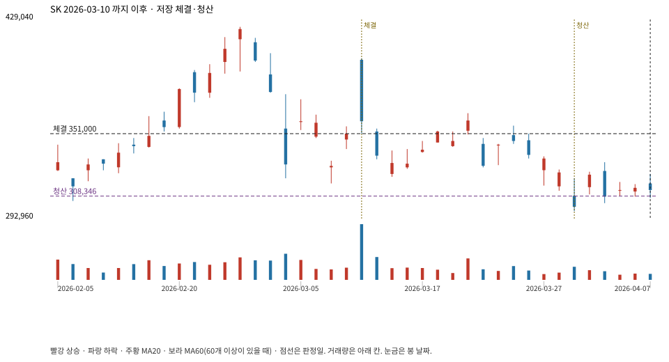

계좌를 다시 돌리지 않았다. 아래는 저장된 주문·체결·청산·비용·손익이다.

{
"case_id": "1dc8e88a5bfcfa74",
"status": "closed",
"trade": {
"symbol": "034730.KS",
"signal_date": "2026-03-10",
"quantity": 25,
"entry": 351000,
"stop": 311235,
"target": 424000,
"planned_risk": 1014567.4220624991,
"reserved_cash": 8783774.999999998,
"fill": {
"date": "2026-03-11",
"price": 351000,
"fee": 8775
},
"exit": {
"date": "2026-03-31",
"price": 308345.75,
"reason": "stop",
"net_pnl": -1082839.893749998,
"ambiguous_bar": false
}
},
"cost": "research fee 10bp each side, slippage 5bp; amounts below are the stored ledger, not a new run",
"chart": "c\/1dc8e88a5bfcfa74.svg"
}